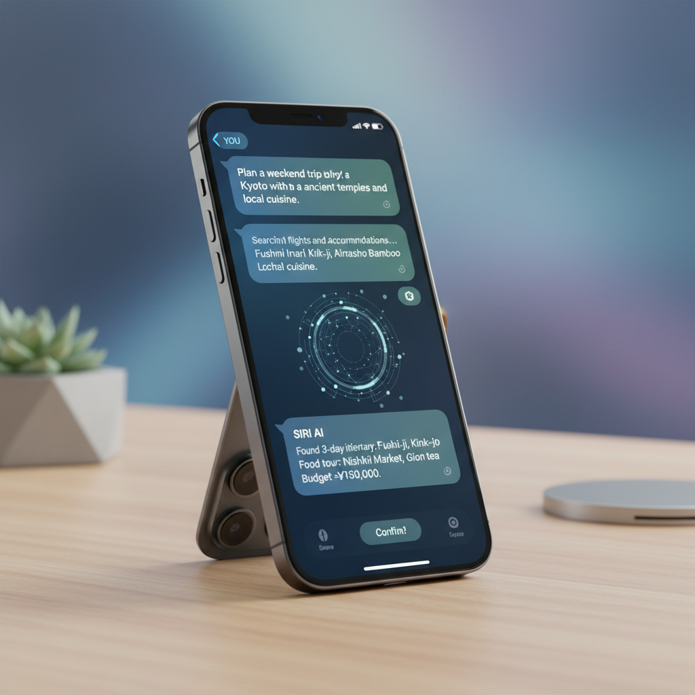

트럼프 행정부가 연방 AI 입법 프레임워크를 공개하며 주 단위 규제를 선점하겠다고 선언했습니다. 워싱턴주는 AI 챗봇 안전법 등 3개 AI 법안을 최종 통과시켰고, Apple은 Gemini 기반 Siri 업그레이드가 또다시 지연될 수 있다는 보도가 나왔습니다. OpenAI는 100만 토큰 컨텍스트의 GPT-5.4를 공개했으며, Bloomberg는 중국 만리방화벽 뒤의 AI 미래를 조명했습니다.
The Trump administration unveiled a federal AI legislative framework, seeking to preempt state-level regulation. Washington state passed three AI bills including chatbot safety laws. Apple's Gemini-powered Siri upgrade faces further delays, OpenAI launched GPT-5.4 with a 1-million token context window, and Bloomberg examined the future of AI behind China's Great Firewall.
트럼프 행정부가 3월 20일 국가 AI 입법 프레임워크를 공식 발표했습니다. 7대 핵심 원칙 — 아동 보호, 지역사회 보호, 지적재산권 존중, 검열 방지, 혁신 촉진, AI 교육, 그리고 주법 선점을 위한 연방 정책 — 을 제시하며 의회에 입법을 촉구했습니다.
The Trump administration officially released a national AI legislative framework on March 20. It outlines seven core pillars — protecting children, safeguarding communities, respecting IP, preventing censorship, enabling innovation, AI education, and establishing federal policy to preempt state laws — urging Congress to legislate.
특히 주목할 점은 '주법 선점'입니다. 각 주가 개별적으로 AI 규제를 제정하면 '패치워크(누더기) 규제'가 되어 혁신을 저해한다는 논리로, 연방 차원의 통일된 접근을 강조했습니다. 데이터센터 허가 간소화, 규제 '샌드박스' 허용, 그리고 새로운 규제 기관 설립 반대 등 친산업적 기조가 뚜렷합니다.
The standout element is "state law preemption." The framework argues that states creating individual AI regulations would produce a "patchwork" of rules that stifles innovation, pushing for a unified federal approach. Pro-industry signals are clear: streamlined data center permitting, regulatory "sandboxes," and opposition to creating a new regulatory body.
핵심 요약: 백악관은 '가벼운 규제(light-touch)' 접근법으로 AI 산업을 지원하면서도 주 단위 규제를 차단하려 합니다. 그러나 중간선거 전 실제 입법까지 이어질지는 불확실합니다.
Key takeaway: The White House is backing a "light-touch" approach to support AI while blocking state-level regulations. Whether this framework becomes actual legislation before midterm elections remains uncertain.
워싱턴주 의회가 3개의 주요 AI 법안을 최종 통과시켰습니다. HB 1170(AI 콘텐츠 공개)은 AI가 생성한 이미지·오디오·영상에 워터마크 등 출처 표시를 의무화합니다. HB 2225(챗봇 안전)는 AI 챗봇이 대화 시작 시 '사람이 아님'을 고지하도록 하며, 미성년자에게는 정기적으로 반복 고지를 요구합니다.
Washington state legislature gave final approval to three major AI bills. HB 1170 (AI Disclosure) mandates watermarks and provenance markers on AI-generated images, audio, and video. HB 2225 (Chatbot Safety) requires AI chatbots to disclose they're not human at the start of conversations, with periodic reminders for minors.
세 번째 법안인 SB 5395는 건강보험 의사결정에 AI를 사용할 때의 투명성을 요구합니다. 이 3개 법안은 주지사 서명을 앞두고 있으며, 백악관의 '주법 선점' 프레임워크와 정면 충돌할 가능성이 있어 연방-주 간 AI 규제 갈등의 시험대가 될 전망입니다.
The third bill, SB 5395, demands transparency when AI is used in health insurance decisions. All three bills await the governor's signature, and they could directly clash with the White House's "state preemption" framework, potentially becoming a test case for federal-state AI regulatory conflict.
핵심 요약: 연방과 주 정부 간 AI 규제의 주도권 경쟁이 본격화되고 있습니다. 워싱턴주의 챗봇 안전법은 특히 미성년자 보호에 초점을 맞추며, AI 기업들에게 새로운 준수 의무를 부과합니다.
Key takeaway: The battle for AI regulatory control between federal and state governments is intensifying. Washington's chatbot safety law focuses on minor protection, imposing new compliance obligations on AI companies.

Apple이 Google Gemini AI를 기반으로 완전히 새로운 Siri를 선보일 예정이었으나, 내부 개발 난항으로 일부 기능이 iOS 26.5(5월)나 iOS 27(9월)로 밀릴 수 있다는 보도가 나왔습니다. 1월에 발표된 다년 계약에 따라 Gemini 모델이 Apple의 Private Cloud Compute 인프라 위에서 구동됩니다.
Apple was expected to debut an entirely new Siri powered by Google Gemini AI, but reports suggest internal challenges may push some features to iOS 26.5 (May) or iOS 27 (September). Under a multi-year deal announced in January, Google's Gemini model runs on Apple's Private Cloud Compute infrastructure.
새 Siri의 핵심은 '개인 컨텍스트' 이해입니다. 메일·메시지·캘린더 등을 통합적으로 파악해 "엄마 비행기 언제 도착해?"와 같은 질문에 자연스럽게 답하는 수준을 목표로 합니다. 그러나 이런 깊은 시스템 통합이 지연의 원인이기도 합니다.
The key to new Siri is "personal context" understanding — integrating Mail, Messages, Calendar to naturally answer questions like "When does mom's flight arrive?" However, this deep system integration is also the cause of delays.
핵심 요약: Apple의 AI 전환은 Google에 의존하는 전례 없는 전략입니다. Siri 지연이 반복되면 AI 경쟁에서 뒤처질 리스크가 있으며, 올해 WWDC가 중요한 분기점이 될 것입니다.
Key takeaway: Apple's AI pivot relies on Google in an unprecedented strategy. Repeated Siri delays risk falling behind in the AI race, making this year's WWDC a critical turning point.
OpenAI가 3월 초 공개한 GPT-5.4가 빠르게 확산되고 있습니다. 가장 눈에 띄는 변화는 100만 토큰 컨텍스트 윈도우 — 약 75만 단어, 해리포터 시리즈 7권을 한 번에 입력할 수 있는 규모입니다. 또한 OpenAI 모델 최초로 네이티브 컴퓨터 사용(computer-use) 기능을 탑재해 데스크톱 탐색, 브라우저 조작, 멀티스텝 워크플로 실행이 가능합니다.
OpenAI's GPT-5.4, launched in early March, is rapidly gaining adoption. The most striking change is a 1-million token context window — roughly 750,000 words, or all 7 Harry Potter books in a single prompt. It's also the first OpenAI model with native computer-use capabilities: desktop navigation, browser control, and multi-step workflow execution.
OSWorld-V 벤치마크에서 75%를 기록해 인간 기준선(72.4%)을 소폭 상회했습니다. Pro와 Thinking 두 가지 버전으로 제공되며, Thinking 버전은 복잡한 추론과 자율적 작업 실행에 특화되어 있습니다. 이전 모델 대비 토큰 효율성도 크게 개선되었습니다.
It scored 75% on the OSWorld-V benchmark, slightly above the 72.4% human baseline. Available in Pro and Thinking versions, the Thinking variant specializes in complex reasoning and autonomous task execution. Token efficiency has also improved significantly over previous models.
핵심 요약: 100만 토큰 컨텍스트와 네이티브 컴퓨터 사용의 결합은 AI 에이전트의 실용성을 한 단계 끌어올립니다. '대화형 AI'에서 '행동하는 AI'로의 전환이 가속되고 있습니다.
Key takeaway: The combination of 1M token context and native computer use elevates AI agent practicality to a new level. The shift from "conversational AI" to "action-taking AI" is accelerating.
Bloomberg이 "만리방화벽 뒤의 AI 미래"라는 심층 보도를 내놨습니다. 1997년 Wired가 처음 '만리방화벽(Great Firewall)'이라는 용어를 사용한 이래, 중국의 인터넷 검열 체계는 이제 AI 시대에도 그대로 적용되고 있습니다. 중국 내 AI 모델들은 정치적으로 민감한 주제에 대해 자동으로 필터링됩니다.
Bloomberg published an in-depth report on "The Future of AI Behind China's Great Firewall." Since Wired first coined "Great Firewall" in 1997, China's internet censorship apparatus is now being applied to the AI era. AI models within China automatically filter politically sensitive topics.
DeepSeek 등 중국산 AI 모델이 글로벌 주목을 받으면서도, 국내에서는 천안문 사태나 시진핑 관련 질문에 답하지 않는 이중적 상황이 발생하고 있습니다. 미·중 AI 칩 수출 규제와 맞물려, 세계는 점차 '두 개의 AI 생태계'로 분리되는 양상입니다.
While Chinese AI models like DeepSeek gain global attention, they refuse to answer questions about Tiananmen Square or Xi Jinping domestically — a dual reality. Combined with US-China chip export controls, the world is gradually splitting into "two AI ecosystems."
핵심 요약: AI 기술의 글로벌화와 국가별 통제의 충돌은 인터넷의 역사를 반복하고 있습니다. 미·중 간 AI 디커플링이 심화될수록, 기업과 개발자는 '어느 생태계에 속할 것인가'라는 전략적 선택을 요구받게 됩니다.
Key takeaway: The clash between AI globalization and national control mirrors internet history. As US-China AI decoupling deepens, companies and developers face a strategic choice: which ecosystem to belong to.
백악관의 연방 프레임워크와 워싱턴주의 3개 AI 법안이 같은 주에 나왔습니다. AI 규제의 주도권을 둘러싼 연방-주 갈등이 2026년 핵심 이슈로 부상하고 있습니다.
The White House framework and Washington's 3 AI bills emerged in the same week. Federal-state conflict over AI regulatory leadership is becoming a defining issue of 2026.
Google에 의존하는 전략 자체가 전례 없는 실험입니다. Siri 업그레이드의 반복 지연은 Apple Intelligence의 신뢰성에 타격을 주고 있습니다.
Relying on Google is an unprecedented experiment for Apple. Repeated Siri upgrade delays are damaging Apple Intelligence's credibility.
100만 토큰 컨텍스트와 컴퓨터 사용 기능은 AI 에이전트의 실전 배치를 앞당깁니다. '챗봇' 시대가 끝나고 '에이전트' 시대가 본격 시작되고 있습니다.
1M token context plus computer-use capabilities accelerate real-world AI agent deployment. The "chatbot" era is ending; the "agent" era has begun.
미국의 수출 규제와 중국의 만리방화벽이 AI 생태계를 물리적으로 분리하고 있습니다. 글로벌 기업들은 '이중 전략'을 고민해야 할 시점입니다.
US export controls and China's Great Firewall are physically splitting the AI ecosystem. Global companies must now consider "dual strategies."